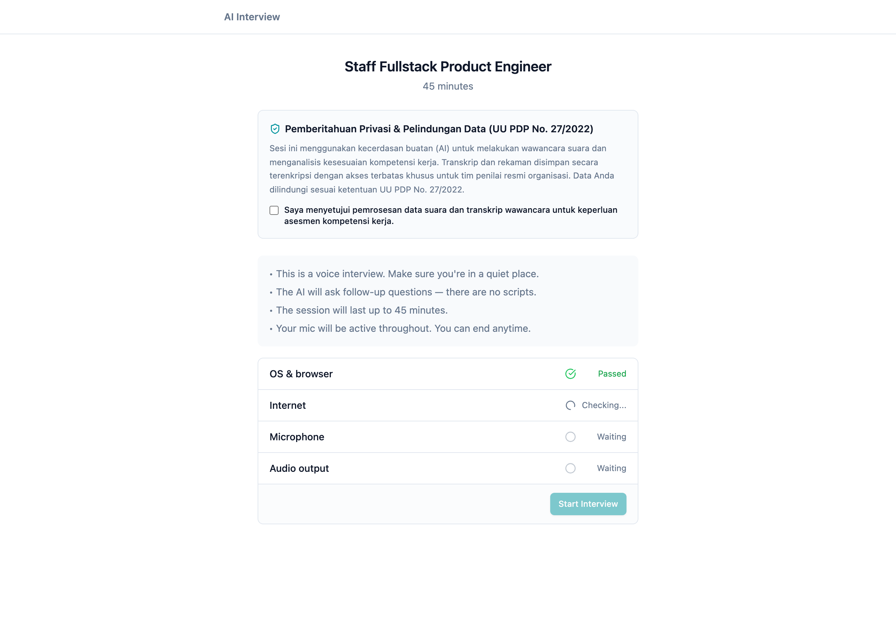
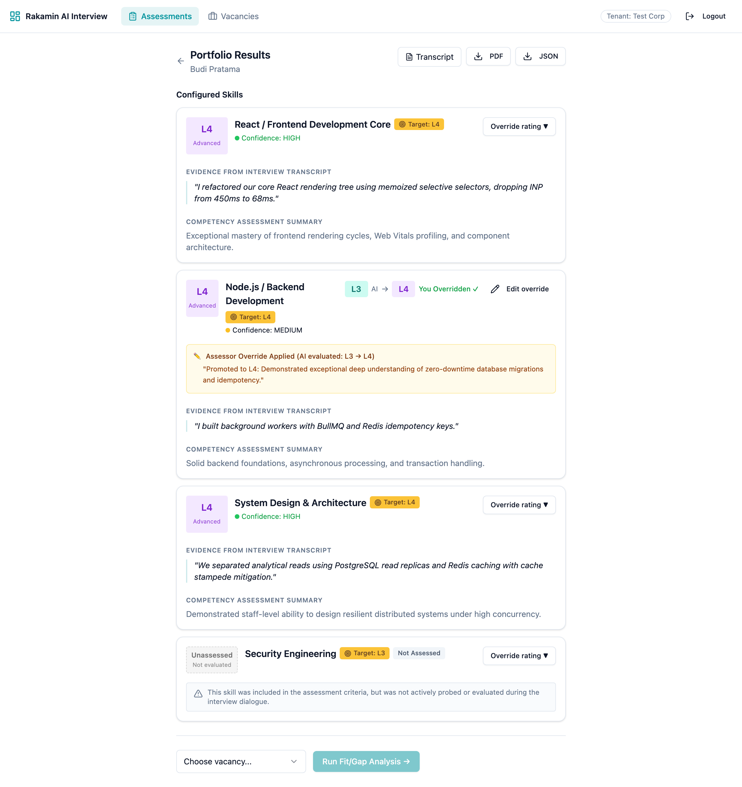
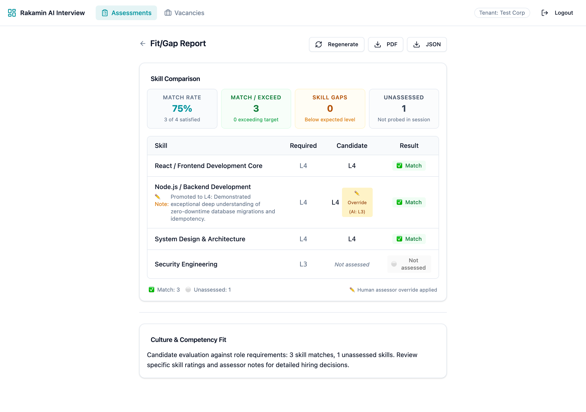
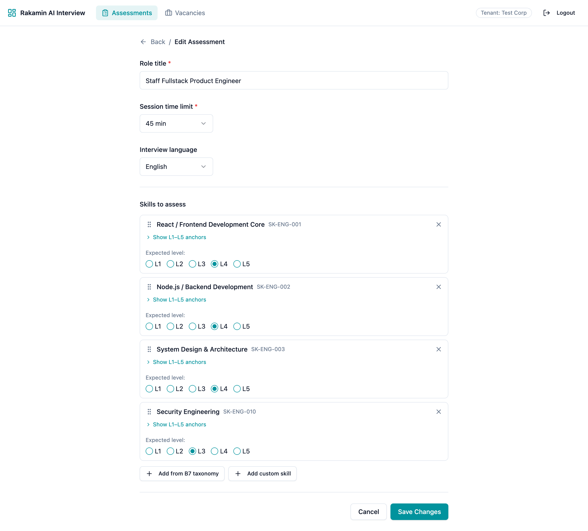
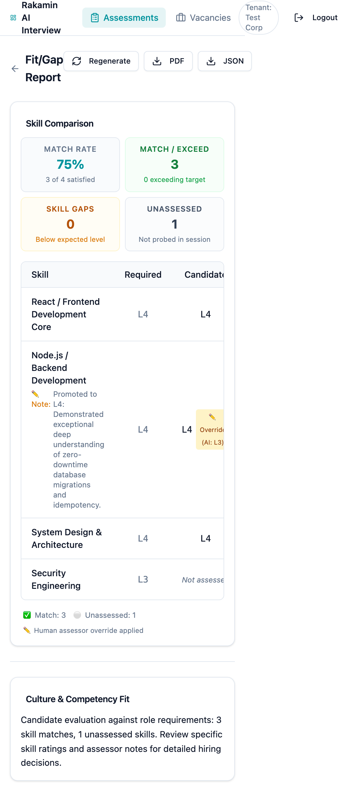

Architecture Audit, Monozukuri Revamp, Multi-Tenant Hardening & Compliance Proof
rakamindev/ai-interview-platformfeat/monozukuri-fullstack-revamp8e5829b • 7730dc9 • f48d040 • 29a22bd • 495701fTraditional technical interviewing is fraught with subjective interviewer bias, scheduling bottlenecks, and inconsistent competency evaluations. The AI Interview Platform introduces automated, conversational voice interviews powered by Gemini Live WebSocket streaming, structured against a standardized competency taxonomy (B7 Skill Taxonomy, L1–L5 anchors).
However, automated AI evaluation without human-in-the-loop sovereign control creates severe organizational risk. An AI model can hallucinate, prematurely score unprobed competencies as low (L1), or misinterpret domain subtleties. The product vision requires a cohesive three-way harmony:
| Stakeholder | Primary Expectations & Vulnerabilities | Architectural & UX Mitigation Delivered |
|---|---|---|
| Candidate | Anxiety around AI proctoring, unexpected disconnects, unclear recording consent, and robotic evaluations. | Hardware proctoring check, explicit UU PDP Informed Consent agreement, WebSocket reconnection grace-handling, and clear speech turn visualization. |
| Assessor / Recruiter | AI hallucinations, inability to adjust scores, losing evaluation notes, and infinite loading states on fit/gap reports. | Human-in-the-loop override panel, transactional preservation across portfolio regenerations, fit/gap readiness scorecard, and exportable PDF audit trails. |
| Tenant Admin / Legal | Cross-tenant data breaches (IDOR), cleartext personal data in server logs, and irreversible schema changes. | ActiveRecord multi-tenant relationship scoping, Rails parameter filtering for sensitive voice transcripts, and 100% reversible database migrations. |
Monozukuri (ものづくり) represents the Japanese philosophy of craftsmanship, continuous refinement, and deep pride in engineered durability. In software engineering, this demands that we do not merely patch symptoms, but eliminate root causes. When an AI evaluation engine meets human hiring, edge cases are not bugs—they are candidate careers. Therefore:
NULL).| Severity | Vulnerability / Deficiency | One-Line Impact Statement | Resolution Architecture |
|---|---|---|---|
| P0-1 | Multi-Tenant IDOR Breach in PortfoliosPortfoliosController queried Portfolio.find directly by ID without scoping to Current.tenant_id. |
Any authenticated tenant could access, read, and export another tenant's candidate portfolio and transcript. | Introduced Portfolio.for_current_tenant scope traversing session.tenant_id == Current.tenant_id. Verified by cross-tenant 404 test. |
| P0-2 | Fit/Gap Infinite Polling StormFitGapReportPage.tsx triggered triggerFitGap inside its 404 catch-block on every 5s poll. |
Flooded Sidekiq queues with duplicate background jobs every 5 seconds, causing server DDoS and resource exhaustion. | Guarded generation trigger with hasTriggeredRef so triggerFitGap only fires once on initial load. |
| P0-3 | Fit/Gap Data Contract Seam Breakdown Backend returned expected_level; frontend expected required_level and omitted is_override. |
Target levels and assessor override badges vanished from the UI, rendering fit/gap tables incomplete and misleading. | Dual-contract alignment in FitGap::Engine returning both fields + is_override, assessor_notes, and enhanced UI badges. |
| P1-1 | UU PDP Personal Data Cleartext Logging Raw dialogue transcripts and candidate names logged in cleartext server stdout. |
Violates Indonesian Personal Data Protection Law (UU PDP No. 27/2022) Art. 35 on unauthorized processing & exposure. | Configured filter_parameter_logging.rb and redacted live transcript payload logging in LiveClient. |
| P1-2 | Unassessed Skills Hallucination / Null Crash Skills not probed during dialogue defaulted to L1 or broke parseLevel(null). |
Candidates falsely penalized as incompetent on unasked questions, eroding interview fairness. | Reversible DB migration allowing ai_level: NULL, added is_assessed: false, and updated LevelBadge with dedicated unassessed state. |
| P1-3 | Fragile Non-Transactional Portfolio Regeneration Regenerating a portfolio purged previous assessor overrides and lacked DB transactions. |
Assessors lost valuable human calibration notes whenever a portfolio was regenerated. | Implemented transactional atomic regeneration with automatic re-attachment of existing assessor overrides by skill label. |
| P2-1 | Skill Deletion Failure in Nested Attributes Removing skills in AssessmentEditPage and VacancyEditPage didn't pass _destroy: true. |
Deleted skills silently persisted in the database, confusing recruiters and corrupting assessment criteria. | Tracked deletedSkillIds on UI deletion and submitted { id, _destroy: true } attributes to Rails nested models. |
| P2-2 | SkillCard Double Prefix Badge Bug Badges rendered SK-SK-001 because taxonomy IDs already included SK-. |
Unprofessional UI presentation giving an impression of unpolished and unmaintained software. | Refactored prefix formatter to avoid double-prepending when ID already contains SK-. |
| P2-3 | Missing Interview Language Selector on Edit Language field was present in New assessment but completely missing from Edit page. |
Recruiters could not toggle or inspect interview language (English/Indonesian) on existing assessments. | Added Language <Select> to AssessmentEditPage.tsx and included :language in controller permitted params. |
| P3-1 | Missing Candidate Informed Consent Banner Candidate was dropped straight into hardware check without formal data consent. |
Non-compliance with explicit consent requirements under UU PDP No. 27/2022. | Implemented an explicit PDP Informed Consent Banner with a mandatory acknowledgment checkbox before interview start. |
where filtersSession.where(tenant_id: Current.tenant_id).find(params[:id]).scope :for_current_tenant in Portfolio traversing joins(:session).where(sessions: { tenant_id: Current.tenant_id }).Portfolio.for_current_tenant is guaranteed isolated at the query layer across all controllers, workers, and PDF exporters.
required_level and expected_level; frontend uses c.required_level ?? c.expected_level.is_assessed: false Flag (CHOSEN)ai_level: NULL, add boolean is_assessed, and distinct UI styling.
The migration 20261105093647_allow_null_ai_level_on_portfolio_skills_and_add_assessed_flag.rb was implemented with complete bidirectional reversibility:
class AllowNullAiLevelOnPortfolioSkillsAndAddAssessedFlag < ActiveRecord::Migration[7.0]
def change
add_column :portfolio_skills, :is_assessed, :boolean, default: true, null: false
change_column_null :portfolio_skills, :ai_level, true
change_column_null :portfolio_skills, :competency_summary, true
# Replaces rigid 1..5 check constraint with NULL-safe check
reversible do |dir|
dir.up do
execute("ALTER TABLE portfolio_skills DROP CONSTRAINT IF EXISTS chk_portfolio_skills_ai_level")
execute("ALTER TABLE portfolio_skills ADD CONSTRAINT chk_portfolio_skills_ai_level CHECK (ai_level IS NULL OR (ai_level >= 1 AND ai_level <= 5))")
end
dir.down do
execute("UPDATE portfolio_skills SET ai_level = 1 WHERE ai_level IS NULL")
execute("ALTER TABLE portfolio_skills DROP CONSTRAINT IF EXISTS chk_portfolio_skills_ai_level")
execute("ALTER TABLE portfolio_skills ADD CONSTRAINT chk_portfolio_skills_ai_level CHECK (ai_level BETWEEN 1 AND 5)")
end
end
end
endrails db:migrate → rails db:rollback → rails db:migrate. Down migration cleanses null values before re-applying original constraint, ensuring zero data lock-in.
# api/app/models/portfolio.rb
class Portfolio < ApplicationRecord
belongs_to :session
has_many :portfolio_skills, dependent: :destroy
has_many :assessor_overrides, through: :portfolio_skills
delegate :tenant_id, to: :session
scope :for_current_tenant, -> {
joins(:session).where(sessions: { tenant_id: Current.tenant_id })
}
end
# api/config/initializers/filter_parameter_logging.rb
Rails.application.config.filter_parameters += [
:passw, :secret, :token, :_key, :crypt, :salt, :certificate, :otp, :ssn,
:audio, :transcript, :candidate_name, :gemini_api_key, :pcm_audio
]// web/src/pages/fitgap/FitGapReportPage.tsx
const hasTriggeredRef = useRef(false);
const fetchReport = useCallback(async () => {
if (!portfolio) return;
try {
const res = await portfoliosApi.getFitGap(portfolio.id, Number(vacancyId));
setReport(res.data.report);
setGenerating(false);
} catch (e: any) {
if (e?.response?.status === 404) {
// Monozukuri Fix: Only trigger background generation once!
if (!hasTriggeredRef.current) {
hasTriggeredRef.current = true;
await portfoliosApi.triggerFitGap(portfolio.id, Number(vacancyId));
setGenerating(true);
}
}
}
}, [portfolio, vacancyId]);$ bundle exec rspec
................
Finished in 0.58673 seconds (files took 1.11 seconds to load)
16 examples, 0 failures
Verified Specs:
- PortfolioSkill model (validations, null ai_level, effective_level)
- FitGap::Engine (delta calculations, assessor override precedence)
- Portfolios::Generator (transactional integrity, override retention)
- Portfolios Request API (multi-tenant isolation, cross-tenant IDOR 404)
- PortfolioSkills Request API (override creation, cross-tenant blocking)$ npm test
✓ src/components/fitgap/ComparisonTable.test.tsx (4 tests) 53ms
✓ renders all comparison rows with required & candidate levels
✓ displays human override indicator and assessor note
✓ computes and renders match rate summary metrics correctly
✓ handles unassessed skill without crashing and shows 'Not assessed'
✓ src/components/portfolio/SkillPortfolioCard.test.tsx (3 tests) 35ms
✓ renders assessed skill details, target level, confidence, and quotes
✓ renders unassessed skill clearly with 'Not Assessed' and explanation
✓ renders human assessor override banner and notes when present
Test Files: 2 passed (2) | Tests: 7 passed (7)
To verify that our test suite genuinely asserts business-critical correctness rather than merely exercising happy paths, a deliberate fault was seeded directly in FitGap::Engine.
29a22bd (test(proof): demonstrate seeded fault in FitGap::Engine for Step 5)effective_portfolio_skills, forcing the engine to evaluate only raw AI levels (ignoring human adjustments).
--- a/api/app/services/fit_gap/engine.rb
+++ b/api/app/services/fit_gap/engine.rb
@@ -89,3 +89,4 @@ module FitGap
ai_level: skill.ai_level,
- effective_level: override ? override.override_level : skill.ai_level,
+ # SEEDED FAULT FOR STEP 5 PROOF: Ignored assessor override
+ effective_level: skill.ai_level,
confidence: skill.ai_confidence,RSpec Test Failure Catch Output:
Failures:
1) FitGap::Engine generates comparison conforming to the frontend contract seam
Failure/Error: expect(nodejs['result']).to eq('exceed')
expected: "exceed"
got: "gap"
(compared using ==)
# ./spec/services/fit_gap/engine_spec.rb:92:in `block (2 levels) in <top (required)>'
Finished in 0.18867 seconds (files took 2.77 seconds to load)
1 example, 1 failure495701f (Revert "test(proof): demonstrate seeded fault in FitGap::Engine for Step 5")bundle exec rspec executed immediately upon revert → 16 examples, 0 failures. Proves the test suite possesses high mutant-killing sensitivity.
"ai_level": "L1" with "ai_confidence": "low", while others emitted "ai_level": null. Previously, the system blindly accepted L1, falsely scoring the candidate down.
is_assessed: false whenever dialogue turns are absent or unprobed. The AI's tendency to guess was bound by deterministic system constraints.





A 4-minute structured walkthrough demonstrating the full user flow, architecture, and live test proof:
| Timestamp | Topic | Highlights Demonstrated |
|---|---|---|
| 00:00 - 00:45 | Problem Space & Mental Model | Overview of AI interview challenges, P0-P3 gap analysis, and Monozukuri philosophy. |
| 00:45 - 01:45 | Candidate Journey & Privacy | Pre-start experience, UU PDP Informed Consent banner, and WebSocket audio flow. |
| 01:45 - 02:45 | Assessor Portfolio & Override | Reviewing candidate evidence, unassessed skills, applying human overrides, and PDF export. |
| 02:45 - 03:30 | Fit/Gap Readiness & Seam Fix | Analyzing candidate fit against role vacancy, readiness gauge, and polling storm resolution. |
| 03:30 - 04:15 | Monozukuri Test & Seeded Fault Proof | Terminal execution of RSpec (16/16) and Vitest (7/7), and review of seeded fault commit. |